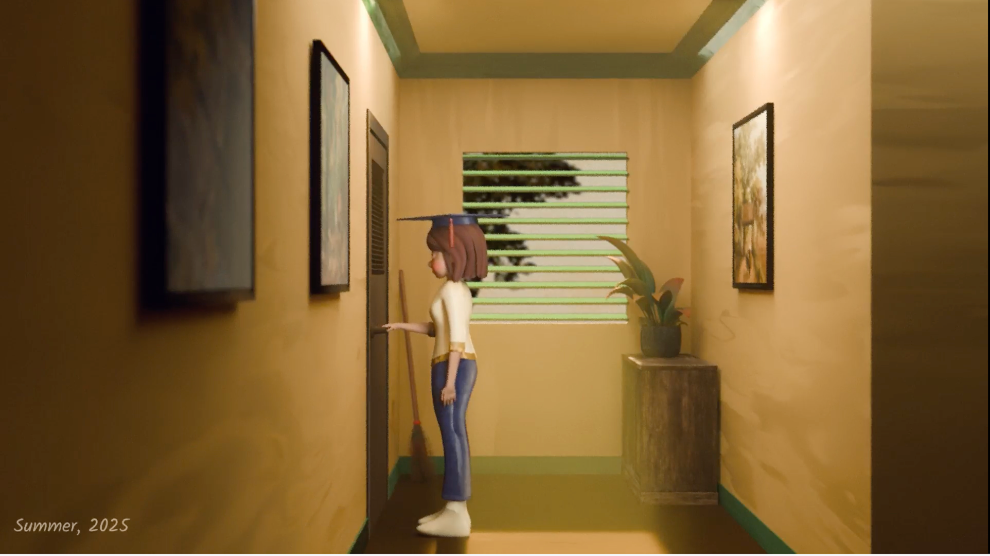
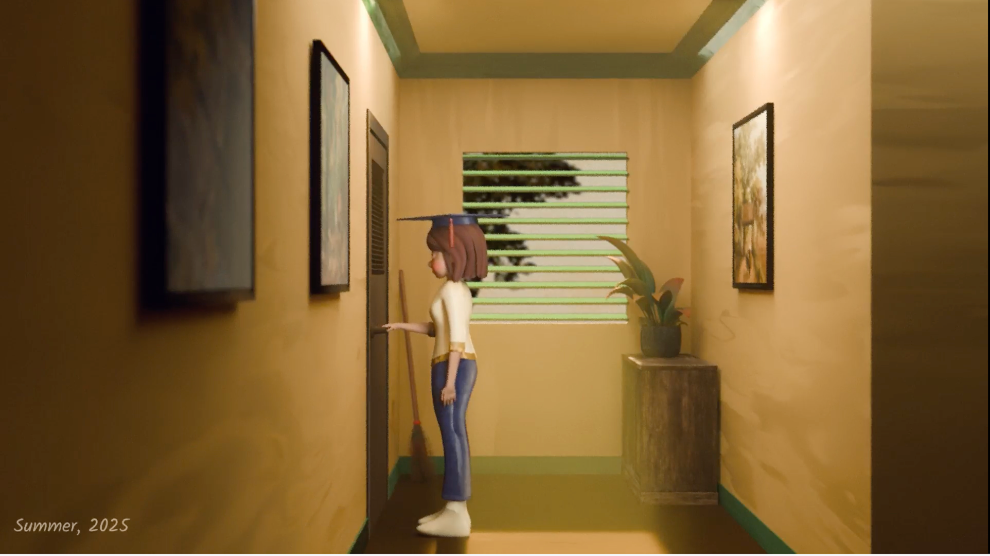

RECORDING NO.9
Director, 3D, Post Producer, Compositing & Editing
A surreal, emotional journey through memory and time, where one woman revisits her younger selves within the liminal space of a hallway and a mysterious door. Through this internal exploration, she confronts long-buried emotions, childhood fears, and finally embraces self-acceptance. We chose the number nine for the title and the recording because in Vietnamese, nine is "(九)", a term that symbolizes eternity. This represents the everlasting and unbreakable bond between a mother and daughter, a connection that endures despite any distance separating them. This is a cinematic meditation on healing through time, using symbolic imagery, subtle transitions, and character transformation across age to tell a deeply human story, all without dialogue.
SUMMARY
In a quiet, dimly lit house, a young girl stands before a strange, old door. Time feels fluid. As she ages from child to teen to adult, she continuously returns to the door. Inside, she finds her youngest self waiting. This act of self-compassion suggests that healing comes from facing the past with gentleness.
PRODUCTION MANAGEMENT
Acting as a producer and artist, I established a strict pipeline to manage the workflow between 3D render and 2D compositing, ensuring delivery within the timeline.
Timeline & Scheduling
Created and maintained a master shotlist to track the status of 20+ shots across modeling, animation, and rendering stages. This served as my central 'production tracker' to ensure no shots were missed during the export to the editing software.

Pipeline & Data Management
Built an efficient 3D-to-post workflow tailored for a small project, using PNG sequences for compositing in After Effects and final color grading in DaVinci Resolve.
Research & Development
Conducted extensive visual research on liminal spaces and lighting references to define the art direction early, minimizing revision time during production.
TECHNICAL PROCESS
3D & Compositing Workflow
To handle the entire post-production scope, I optimized my scenes for render efficiency without sacrificing visual quality.
- 3D: Modeled the character and environment with a Vietnamese-inspired aesthetic, focusing on clean topology for efficient rendering and animation.
- Texturing & Lighting: Created hand-painted textures incorporating Vietnamese patterns, with warm, foggy lighting to evoke a nostalgic mood.
- Compositing: Used rotoscoping for smoother transitions, added exterior backgrounds through the window, and applied subtle effects to enhance atmosphere.


MAIN SCENES
 

SHOWREEL
CREDITS
3D Generalist, Animation, Music: Nguyen Anh Khoa
Set Design, Texture: Nguyen Anh Tuyen
Editing, Sound Design: Truong Nguyen Kieu My